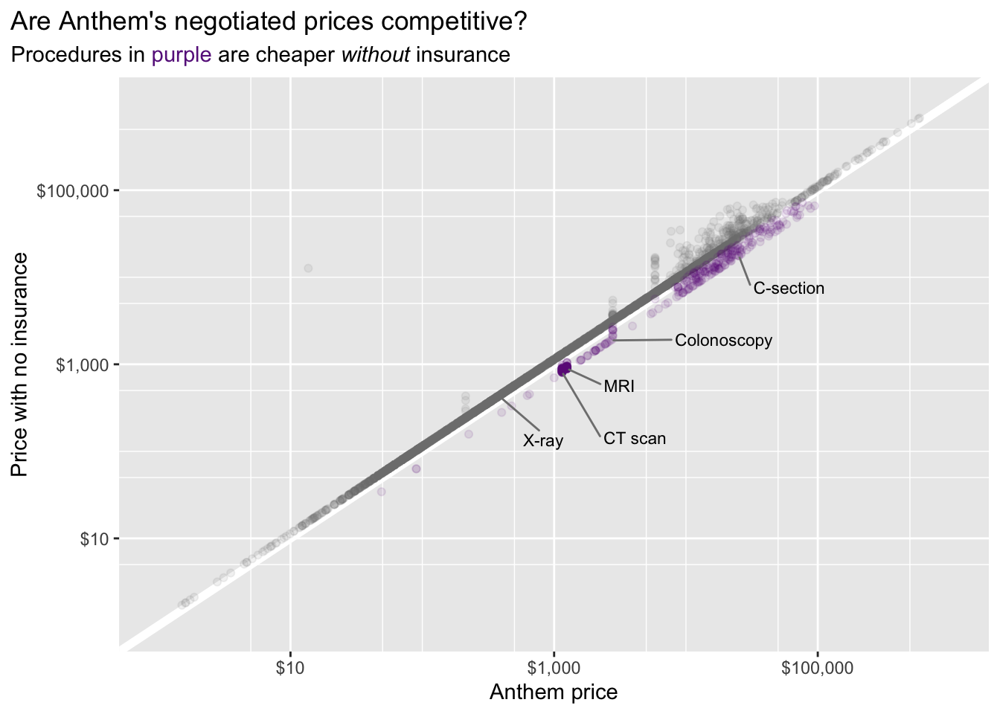
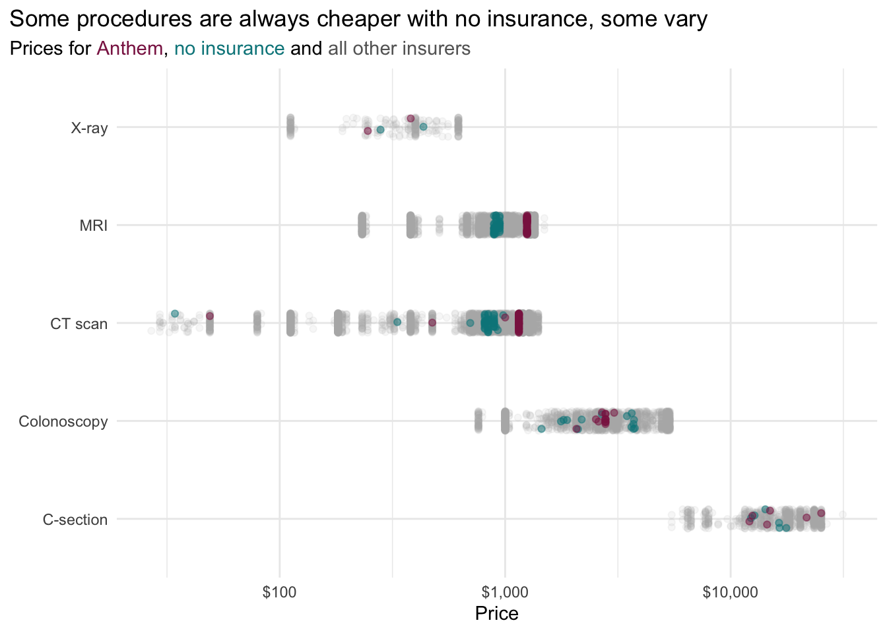
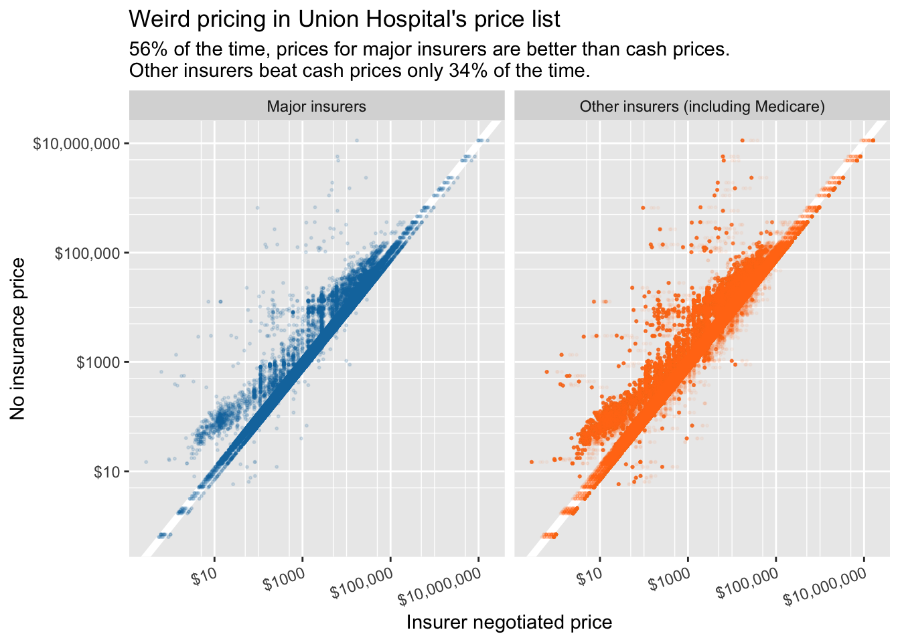

| Code | Description | Gross charge | Max negotiated charge | Min negotiated charge | Insurer | Charge |
|---|---|---|---|---|---|---|
| 110.2 | ear, nose, mouth, throat, cranial/facial malignancies | 37,706.14 | 5,687.37 | 5,687.37 | Caresource HIP | 5687.37 |
| 110.2 | ear, nose, mouth, throat, cranial/facial malignancies | 37,706.14 | 5,687.37 | 5,687.37 | Healthy Ind MD Wise | 5687.37 |
| 110.2 | ear, nose, mouth, throat, cranial/facial malignancies | 37,706.14 | 5,687.37 | 5,687.37 | Healthy Indiana Anthem | 5687.37 |
| 110.2 | ear, nose, mouth, throat, cranial/facial malignancies | 37,706.14 | 5,687.37 | 5,687.37 | MHS HIP | 5687.37 |
| 110.4 | ear, nose, mouth, throat, cranial/facial malignancies | 50,000.16 | 13,963.29 | 13,963.29 | Caresource HIP | 13963.29 |
| 110.4 | ear, nose, mouth, throat, cranial/facial malignancies | 50,000.16 | 13,963.29 | 13,963.29 | Healthy Ind MD Wise | 13963.29 |
Can you save money at Union Hospital by not using insurance?
Depending on your insurance plan, maybe yes, for some procedures.
Data Analysis
Due to a new federal law, hospitals must publish their price lists. The price list for Union Hospital in Terre Haute shows what many other price lists from hospitals around the country do – that insurers’ negotiated prices sometimes don’t make sense.
One of the many frustrating things about health care in the US is not having a clue what things are going to cost. But this year, a new federal law went into effect requiring hospitals to publish all of their prices.
I learned about this after reading this article in the New York Times by Sarah Kliff and Josh Katz. They analyzed the price lists at a number of hospitals and found some huge disparities in prices for identical treatments at the same hospitals and some puzzling discrepancies in insurers’ negotiated prices. Notably, sometimes, the listed price for a treatment negotiated by an insurance company was higher than the listed price for a patient with no insurance at all. For insurance plans with high deductibles, this means you could potentially save money by not using your insurance for some treatments.
This got me curious about my own insurance and my own local hospital, so I decided to do a similar analysis.
The data 🗒
Union Hospital, the largest health care provider in my town, makes their price list available here. It includes a line for each treatment or procedure for each different insurer. It’s admittedly a little hard to make sense of. Here’s a small sample of the data.
My interpretation of this is that the final column, Charge, is the result of the negotiation process and is what should be considered the final negotiated “price” of a procedure. The rest of my analysis is based on that assumption.
Does my own insurance plan save me money? 💵
My insurance plan is Anthem Blue Access PPO. It’s part of the Blue Cross Blue Shield association, one of the biggest health insurance companies in the country. Like many people in the US, I get it through my employer and don’t really have much of a choice in the matter.
I was first interested in whether Anthem’s negotiated prices at Union were at least as good as those charged to people with no insurance. As Matt Eyles, chief executive of America’s Health Insurance Plans says in the NYT article, “Insurers want to make sure they are negotiating the best deals they can for their members, to make sure their products have competitive premiums”.

This plot includes every treatment and procedure in Union’s price list (except for some extremely expensive ones). Each point is one procedure. Points that fall below the white diagonal line are actually cheaper with no insurance than with my Anthem insurance. Because there are so many points bunched up near the diagonal, it’s hard to tell that actually 91% of the points are on or above the line, suggesting that Anthem’s negotiated prices are generally good, relative to having no insurance (they are, unsurprisingly, much higher than Medicare’s prices).
But what are those remaining 9% of procedures? Imaging seems to account for a few. Union Hospital charges Anthem about $350 more for MRIs than it does for patients with no insurance. And it charges about $310 more for CT scans.
For some other procedures, prices vary depending on several factors, and sometimes Anthem’s price is lower, and sometimes it isn’t. For example, here are all the prices for colonoscopies in the price list.
| Description | Anthem price | No insurance price |
|---|---|---|
| Colonoscopy through stoma; with removal of tumor(s), polyp(s), or other lesion(s) by hot biopsy forceps | 2688.12 | 1881.68 |
| Colonoscopy, flexible; with removal of foreign body(s) | 2593.67 | 1815.57 |
| Colonoscopy, flexible; with control of bleeding, any method | 2526.29 | 1768.41 |
| Colonoscopy, flexible; with transendoscopic balloon dilation | 2785.00 | 2102.55 |
| Colonoscopy, flexible; with ablation of tumor(s), polyp(s), or other lesion(s) (includes pre- and post-dilation and guide wire passage, when performed) | 2071.23 | 1449.86 |
| Colonoscopy through stoma; with removal of tumor(s), polyp(s), or other lesion(s) by snare technique | 2785.00 | 2184.82 |
| Colonoscopy, flexible; with directed submucosal injection(s), any substance | 2785.00 | 2685.72 |
| Colonoscopy, flexible; with band ligation(s) (eg, hemorrhoids) | 3044.17 | 3466.60 |
| Colonoscopy, flexible; diagnostic, including collection of specimen(s) by brushing or washing, when performed (separate procedure) | 2785.00 | 3631.14 |
| Colonoscopy, flexible; with removal of tumor(s), polyp(s), or other lesion(s) by hot biopsy forceps | 2785.00 | 3642.09 |
| Colonoscopy, flexible; with biopsy, single or multiple | 2785.00 | 3705.97 |
| Colonoscopy, flexible; with removal of tumor(s), polyp(s), or other lesion(s) by snare technique | 2785.00 | 3705.97 |
| Colonoscopy through stoma; diagnostic, including collection of specimen(s) by brushing or washing, when performed (separate procedure) | 2785.00 | 3726.00 |
| Colonoscopy through stoma; with biopsy, single or multiple | 2785.00 | 3758.64 |
There doesn’t seem to be much rhyme or reason to when the Anthem prices are lower and when the cash (no insurance) prices are lower, but maybe I’m missing something. (There are some similar oddities in the pricing for C-sections.)

How do Union Hospital’s negotiated prices compare overall? 📈
The price list includes prices for nearly 150 different insurance plans. How do the rest of them fare? The plot below replicates the first plot but includes prices from all insurers. I’ve separated out the five largest private insurers – Aetna, Cigna, Humana, United, and the Blue Cross Blue Shield Association.

Across all procedures, insurers’ negotiated prices don’t compare very favorably with Union Hospital’s cash prices for people with no insurance. The fact that “non-major” insurers’ prices beat the cash prices only 34% of the time is especially surprising because that group includes several Medicare plans, whose prices are consistently very low (and almost certainly beat the cash prices every time).
What does this mean? 🤨
Information like this is potentially important for patients to have. But as the NYT article indicates, price discrepancies and inconsistencies are probably more embarrassing for the insurance companies than for the hospitals because the insurers want to be able to claim that they have negotiated competitive prices.
How seriously should we take this information?
It’s probably hard to be sure. The price that gets charged for medical care surely depends on lots of factors. So I personally wouldn’t consider it a guarantee that because an entry in this list shows that a specific procedure is cheaper with no insurance that I’d be better off not using my insurance to get it.
But this information isn’t made up either. Hospitals do use these price lists as a starting point (at least) for billing. So I think it’s reasonable to use these price lists to draw some broadly valid conclusions about the value of your health insurance and the approximate costs of your health care.
How much does this matter?
One last point I haven’t addressed is that the price charged by the hospital is not the same thing as the price you owe as an individual. The difference between a price tag of $50,000 and $60,000 may be irrelevant to you if you have health insurance with a deductible of $2,000 that pays all costs after that deductible is met. So some of these price discrepancies are problems for insurance companies, not for consumers.
But, as you’ll note above, some of the cases where Anthem is beat by the “no insurance” rates are well below common deductibles. So these cost differences can affect how much you are paying 💵.
Code and data 📑
Code and data for this analysis is available here.